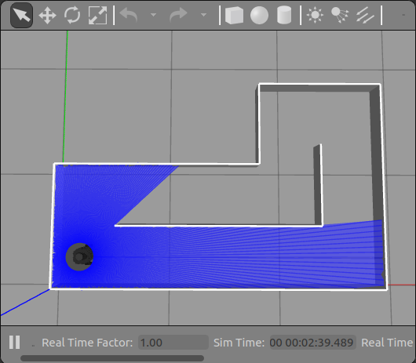
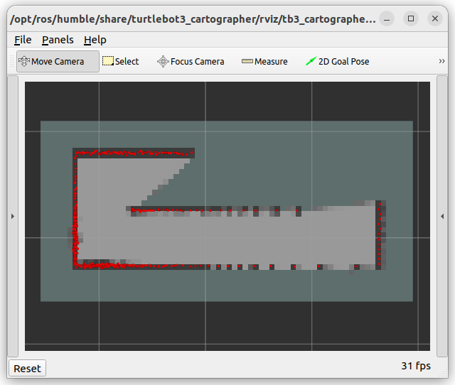
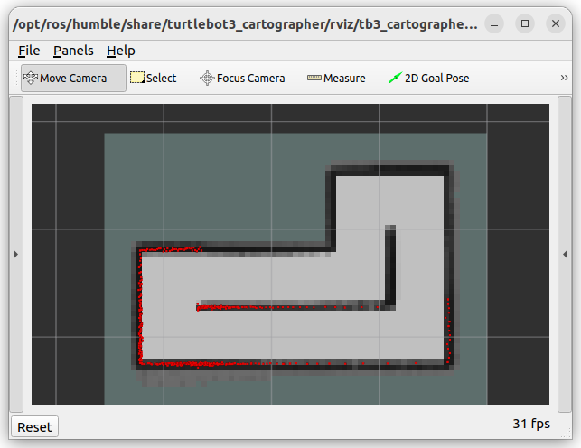

🔬 Lab9: SLAM#
📌 Objectives#
Students should be able to implement a ROS2 node to detect walls using LiDAR data.
This lab focuses on simulating autonomous exploration and navigation using SLAM in both Gazebo and real-world TurtleBot3 environments. You’ll work with a prebuilt map and create new maps using Cartographer.
📜 Overview#
In this project, we will enable our robot to autonomously navigate an unknown maze and build a map of the environment. As in the previous lab, we will use LiDAR to detect the walls of the maze (or obstacles) surrounding the robot. We will be utilizing the Simultaneous Localization and Mapping (SLAM) library provided by ROS2 and TurtleBot3.
SLAM, or Simultaneous Localization and Mapping, is a process used in robotics to enable a robot to build a map of an unknown environment while simultaneously determining its location within that map. It involves combining sensor data, algorithms, and probabilistic methods to perform real-time mapping and localization. SLAM is crucial for autonomous robots to operate effectively in environments where pre-existing maps are not available.
SLAM is one of the fundamental algorithms in robotics and is widely used in applications such as autonomous vehicles, drone navigation, and robotic vacuum cleaners. It enables robots to navigate dynamic and unfamiliar environments without relying on GPS or pre-defined maps, which is essential for many real-world scenarios.
SLAM integrates data from sensors like LiDAR and odometry to construct and update a map while estimating the robot’s position. Through statistical methods like Kalman Filters or Particle Filters, SLAM corrects errors in localization and mapping to achieve accurate results. While the underlying mathematics involves advanced topics in statistics and optimization, libraries provided in ROS2 simplify SLAM’s implementation, making it accessible for practical applications.
We will use Cartographer in this lab because it provides an efficient and accurate SLAM solution for 2D environments like the maze we’ll be mapping. Its ability to handle LiDAR data and update maps in real time makes it ideal for this project. Furthermore, its compatibility with TurtleBot3 and ROS2 simplifies the setup, allowing us to focus on understanding the SLAM process and its applications.
🌱 Pre-Lab: ROS2 Client Libraries#
The ROS2 Intermediate Tutorials on actions are a great starting point for learning about ROS2 action servers and clients.
{kind=link}
Complete the following three tutorials. Important: Skip C++ tutorials and focus only on the Python tutorials.
Managing Dependencies with rosdep
No need to install anything - your computer already has all the required packages set up.
Creating an action
Make sure you’re working in the
ros2_wsworkspace. Avoid using themaster_wsworkspace for this one.
Writing an action server and client (Python)
As instructed at the end of this tutorial, run the action client. When the feedback appears on the screen, capture a screenshot and upload it to Gradescope.
🛠️ Lab Procedures#
1. Setting Up TurtleBot3 with SLAM in Gazebo#
Follow these steps to simulate SLAM with TurtleBot3 in the Gazebo environment.
Download the
maze Gazebo files. Extract the files and place them in the appropriate directories within~/master_ws/src/turtlebot3_simulations/turtlebot3_gazebo. Make sure to merge the new directories with the existing ones.Run the following command to start the Gazebo simulation with the maze world:
ros2 launch turtlebot3_gazebo maze.launch.py
This will launch the Gazebo environment with the maze, as shown below:
Open a new terminal and start the Cartographer SLAM process:
ros2 launch turtlebot3_cartographer cartographer.launch.py use_sim_time:=true
The use_sim_time:=true parameter ensures proper synchronization with the simulation clock. Cartographer will begin building a map as you move the robot. The initial map will look like this:
Use a gamepad to manually control the robot and navigate the maze. Run the following command to start the gamepad controller:
ros2 launch lab4_gamepad gamepad.launch.py
Black pixels represent obstacles (walls).
Gray pixels indicate noise or uncertainty. As you complete multiple laps, the uncertainty decreases, and light gray pixels become darker.
Once the map is complete, it should look like this:
After mapping the maze, save the map using the following command:
ros2 run nav2_map_server map_saver_cli -f ~/map
Confirm that two files,
map.yamlandmap.pgm, have been created in your home directory. Then view the contents ofmap.yamlusing thecatcommand:cat map.yamlExample output:
image: map.pgm mode: trinary resolution: 0.05 origin: [-0.5, -0.7, 0] negate: 0 occupied_thresh: 0.65 free_thresh: 0.25
resolution: Each pixel represents 0.05 m x 0.05 m in the real world.
origin: [-0.5, -0.7, 0] means the map starts at (-0.5 m, -0.7 m, 0 m) in the world frame
occupied_thresh: The occupancy grid values greater than 65 are considered “occupied”
free_thresh: The occupancy grid values less than 25 are considered “free space”
Download
map_plotter.pyto your home directory. Then, make the script executable:chmod +x map_plotter.py
Verify the file permissions using
ls -l.Important
If asked about the command to make a file executable only for the owner, you should know the answer for your GR. 😉
Complete the
TODOsection inmap_plotter.py, and then run the script to generate the map.Run the script to plot the map:
./map_plotter.py
Verify that the map dimensions match the actual maze. Each wall piece is 0.18 meters long.
{kind=link}
{kind=link}
{kind=link}
{kind=link}
{kind=link}
{kind=link}
{kind=link}
{kind=link}
{kind=link}
🚚 Deliverables#
[10 Points] Complete the
map_plotter.pyScriptEnsure the script is fully functional and implements all required features.
Push your code to GitHub and confirm that it has been successfully uploaded. NOTE: If the instructor can’t find your code in your repository, you will receive a grade of 0 for the coding part.
[10 Points] Complete the
navigate_maze.pyScriptEnsure the script is fully functional and implements all required features.
Push your code to GitHub and confirm that it has been successfully uploaded. NOTE: If the instructor can’t find your code in your repository, you will receive a grade of 0 for the coding part.
[10 Points] Submit Screenshots
Submit the two screenshots on Gradescope
[10 Points] Demonstration
Show the robot successfully move between two walls in the simulation environment.
[10 Points] Reflection and Analysis
Provide your reflection and analysis on Gradescope